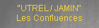

| 2008 |
| Janvier |
 |
| Janvier |
 |
| Mars |
 |
| Avril |
 |
| Mai |
 |
| Juin |
|
| Juin |
 |
| Août |
 |
| Septembre |
 |
| Octobre |
|  |
| Novembre |
 |
| Décembre |
 |
| Décembre |
 |
| |
 |
 |
 |
|
|
|
|
Les Confluences du Garage
Carte blanche à Astrid TIELEMANS
Invité : le duo Weltanschauung
Astrid Tielemans est apparue sur terre en octobre 1953 à La Haye. Dans le courant des années 70,
elle crée «ALUMET» avec Aart Elshout. Jusqu’à la dissolution du groupe en 2006, les deux artistes existaient en
tant qu’ALUMET sans que chacun d’eux n’apparaisse spécifiquement dans les oeuvres proposées.
Toute l’énergie démultipliée que lui a donné Alumet resurgit aujourd’hui dans une écriture composite et composée
donnant vie à ses formes et à ses mots.
Elle vit et travaille à Blanc, près de Madaillan dans le Lot-et-Garonne dans une immense maison-atelier immergée dans un vaste espace arboré, préservé et jardiné.
Le chemin s’arrête à Blanc et là commence l’aventure artistique de la création..
Création : le mot est au coeur de son son rapport aux autres. En 2006, à l’occasion de la première manifestation publique qu’elle avait organisée à Blanc en tant qu’Astrid Tielemans, elle avait affirmé ses convictions « Il est très important pour moi que chacun prenne conscience que nous sommes tous des créateurs. Créer est un processus naturel et culturel, nous rendre compte que nous sommes tous des créateurs est primordial pour notre existence. Chacun a une necessité intérieure de créer, de développer cette capacité créatrice, de coopérer à sa propre réalisation. Or la capacité de créer de chacun est souvent réduite par la peur de mal faire. { ... } Le processus garantit le résultat, la prise de conscience, elle, se traduit après dans la matière. L’objectif n’est pas à lui seul suffisant, il faut le chemin.
Le plus important est de réfléchir au comment et surtout au pourquoi de notre action. Si l’on arrête d’exploiter sa force créatrice, on existe pas.»
Découvrir d'autres travaux d'Astrid Tielemans
http://www.mattress.org/index.cfm?event=ShowArtist&eid=17&id=26&c=Past
Voir le dossier de presse : ICI
INFORMATIONS PRATIQUES
Exposition ouverte du samedi 31 mai au dimanche 8 juin (voir les horaires en bas de page)
Vernissage : samedi 31 mai à partir de 18h30 en présence d'Astrid Tielemans et de Weltanschauung
Lieu : Garage Donadieu - 15 rue Donadieu - 46000 Cahors - (voir
plan en bas de page)
Contact : Michel Brissaud - 05 65 21 14 47
Toutes les photos : © quinze donadieu
|
|
|
David Reynier et Jean-Marc Froment, les musiciens du duo Weltansschuung jouent ensemble depuis plusieurs années. Ils utilisent des instruments analogiques et numériques avec lesquels ils improvisent. Leur musique propose une aventuresonore où les rythmes s'entrechoquent avec des ambiances atmosphériques.
Le duo Weltanschauung s'est déjà produit plusieurs fois pour des siestes musicales ou des concerts chez l'habitant. Il s’est déjà produit au Garage Donadieu lors d’un concert en novembre 2007 et à la Médiathèque du pays de Cahors au printemps 2008.
Découvrir d'autres travaux de Weltanschauung
http://profile.myspace.com/index.cfm?fuseaction=user.viewprofile&friendid=338493033 |
|
|
Cliquez ici pour voir les jours et horaires |
|
Venir au Garage Donadieu - cliquer ici |
|
 |
|
|